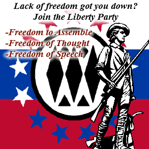
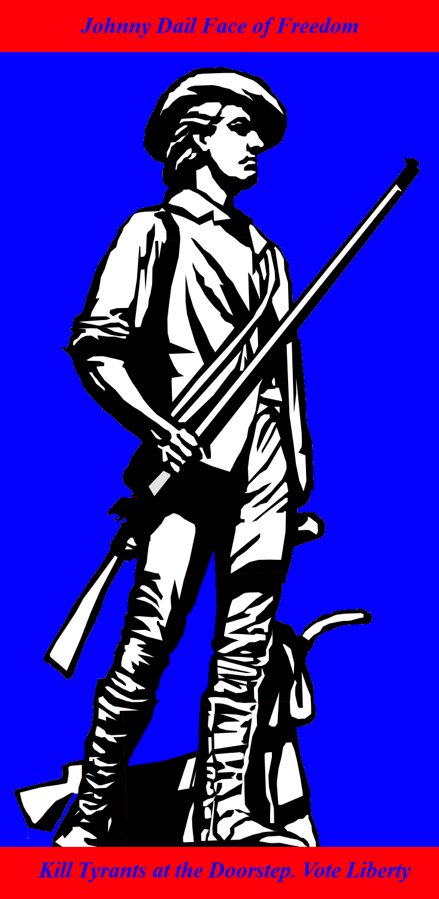
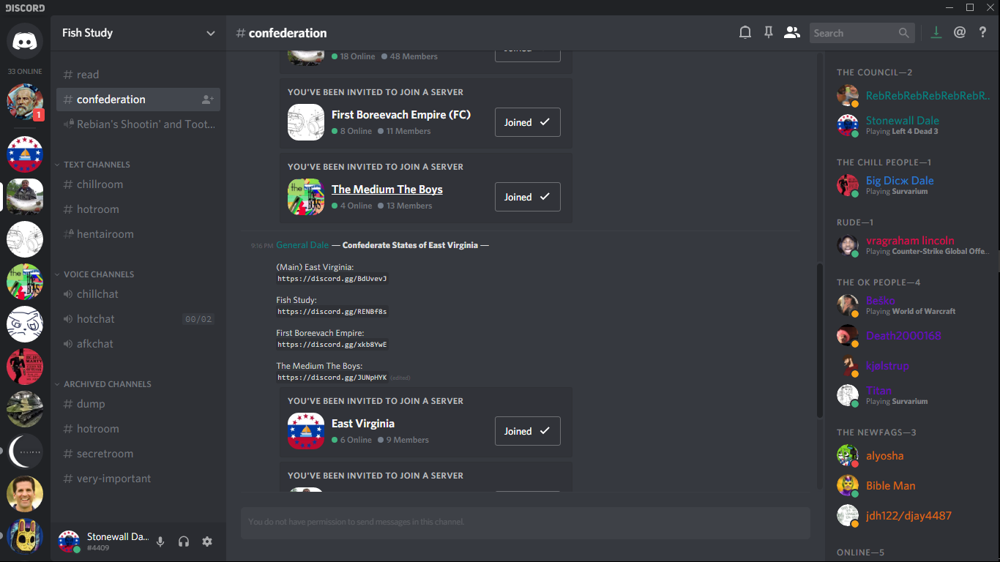
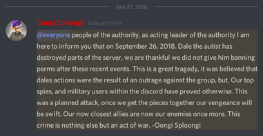

Within the month of September, in the 2018th year of our Lord, there was a Discord server called the Authority, or Oongisploongia, owned by a guy named Oongi Sploongi. The people of note from this server are in no paticular order: Dale, NT44, Other Dale, Titan, Wilhelm, Alicia, Doctor, and Jess.On or near the date of the 16th of September, still 2018, Dale got fed up with having the rank of "Supreme General Commander" but less power/perms than the lower roles. So he organised a small strike or protest to get more perms. Among those who he brought into this strike were: Other Dale, Reb, NT44, and Titan. When he gave the mark, they'd all post in the chat "Give Dale perms! Give Dale perms!" And things relating to that. This strike quickly turned into a riot as they started spamming and it turned into a full blown revolution when Reb, who was the first to say this, said "Hail Dail!" Dale tried to calm everyone down and explain himself to the mods and admins who were accusing him, because Oongi Sploongi was offline at a vacation; but to no avail. Almost everyone in the strike-turned-revolution was either muted, kicked, or indeed banned. When Oongi got online he saw all of this and devised a plan to remove Dale and all his supporters. He brought everyone back in, and then annuanced that a voting would be held for the election of a President of the Authority, which would still be under the rule of the Owner of the Authority; Oongi himself. After some people tried to become a canidate, everyone settled into four parties, but only two are of note: The Liberty Party, headed by Dale and Other Dale; and the Authority Party, headed by Doctor, Fritz, and Jess. Two people named Kermit and Lemon also ran for this election, probably forced to by Oongi to make less votes go to Dale and the Liberty Party. The Authority Party was essentially the 'state' party, so to speak, and the Liberty Party was made up of those who were either friends of Dale or crypto-enemies of Oongi. Dale was often called "General Dale" or "General Dail" at this time, and his right hand man was Other Dale who was also called "Stonewall Dale". Many took the name Dale in some way in the party, creating a sort of cult of personality around Dale. To clarify, sometimes Dale would be called "The Dale" or "Der Dail". There were also many public interviews and talks about the policies and beliefs between Doctor and Dale, with Dale even writing two bills for if he got elected. These were the Bill of Election, giving rules and regulations to how a President of the Authority is elected; and the Bill of Power, giving rules and regulations to what power the President of the Authority had. Sadly both of these bills have been lost.
 
On the 24th of September, still 2018, the votings for President of the Authority were held. After about an hour or so, every person who voted for Dale were one by one stripped of rank, locked in a channel called "executions", and "executed" (banned). This ended with Dale himself being "executed". A few spies remained and explained how, indeed, the whole voting was a ploy to purge the server of Dale and the Liberty. This would come to be called the Voting Day Massacre. Dale and the rest of his comrades, namely Other Dale, Titan, and NT44, formed a Discored Confederacy out of their servers. This was called the East Virginian Confederacy, with East Virginia itself eventually becoming another name for Fishstudy. This was because the other servers in the Discord Confederacy weren't that active. This Discord Confederacy was headed by a council comprised of General Dale, First Among Equals; Stonewall Dale, Reb, NT44, Titan, Rico, Jak, and Alicia. Alicia would be given the honorary title of Tsarina because she had a Cryllic nickname, and Dale liked her.

After three days in exile, Dale, with the backing of Wilhelm a former enemy and his server Sovin which was partially part of the Discord Confederacy; talked his way with Oongi into getting his rank of Supreme General Commander back. Oongi probably planned on using this to somehow attack East Virginia but went offline shortly after. One can only wonder what happened. Dale had every perm except to kick or ban people, and so proceeded to launch a full scale assault, or nuke really, on the server. He gave all of his comerades every perm he had while stripping everyone else of perms, deleted every channel and role, made a bunch of bloat that would be annoying to clean up, and 'migrated' everyone in East Virginia. You see, when Dale was still under Oongi's yoke he sometimes spoke cryptic nonsense to confuse spies in the Authority. One of these things, however, was the ⛵ (nicknamed the "Bote"). Reb would spam the emoji, calling it the fleets, which would lag out if not freeze and crash some peoples' Discord. This was one of the Liberty Party's signature raiding techniques and was used on the nuking of the Authority.

A few days or weeks later, the Discord Confederacy was disbanded as the threat of Oongi was eliminated. Oongi himself would later vanish, although rumors of the Authority returning still spread around at times. Even archives of it pop up every now and then.

♥ Exhibit P: Discord Confederacy ♥